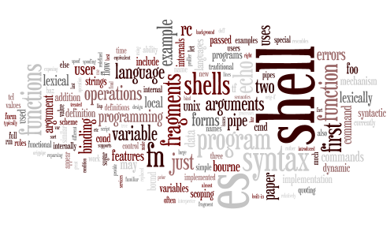

a shell with higher-order functions

Es is an extensible shell. The language was derived from the Plan 9 shell, rc, and was influenced by functional programming languages, such as Scheme, and the Tcl embeddable programming language. This implementation is derived from Byron Rakitzis's implementation of rc, and was written by Paul Haahr & Byron Rakitzis.
Es is an extensible Unix shell with first class functions, lexical scope, exceptions, and rich return values (i.e., functions can return values other than just numbers). Es's extensibility comes from the ability to modify and extend the shell's builtin services, such as path searching and redirection. Like the Plan 9 shell rc, it is great for both interactive use and for scripting, particularly since its quoting rules are much less baroque than the C or Bourne shells. -- Paul Haahr
Es had its heyday from '93-'96; the mailing list was apparently last active in 2002. Nevertheless, for those who've only used a Bourne-shell derivative, es is a breath of fresh air. This site is simply me (James Haggerty) trying to unofficially pull together all of the patches and information and keep es functioning on modern Unices.
Es has had a few efforts to continue development; these include:
Es is in the public domain. We hold no copyrights or patents on the source code, and do not place any restrictions on its distribution. We would appreciate it if any distributions do credit the authors.
Enjoy!
Paul Haahr & Byron Rakitzis